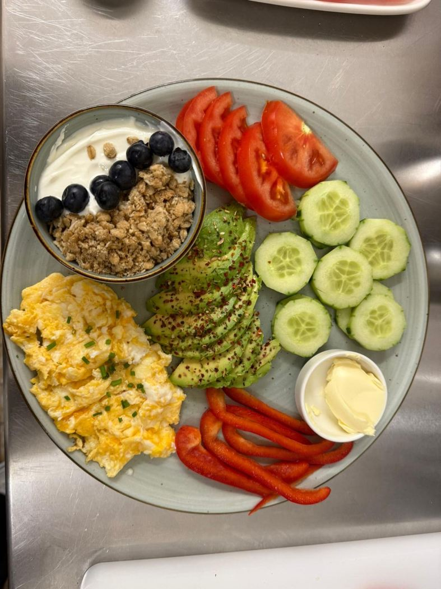

Frühstück & Brunch
Am Wochenende genießen.
Frühstück, hausgemachte vegane Çiğköfte, feine Kuchen und Kaffeespezialitäten – mit Liebe serviert in Steinbach (Taunus).

Am Wochenende genießen.

Herzhaft und lecker.

Süße Genussmomente.
Im Café Devin verbinden wir gemütliche Café-Atmosphäre mit einer abwechslungsreichen Auswahl aus Frühstück, herzhaften Speisen und süßen Köstlichkeiten.
Montag – Freitag: 07:00 – 20:00 Uhr
Samstag – Sonntag: 08:00 – 20:00 Uhr
Frühstück & Brunch am Wochenende bis 14:00 Uhr.
Gartenstraße 26
61449 Steinbach (Taunus)
06171 8873888
Jetzt anrufenReservieren Sie telefonisch oder per E-Mail.
cafedevin@hotmail.com
Neuigkeiten aus dem Café.
Instagram ansehen